This Python Script takes two images that have been captured from the same location at different facing perspectives and merges them together into a single panoramic photo.
Target 1, Target 2, Result
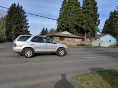 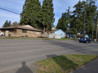 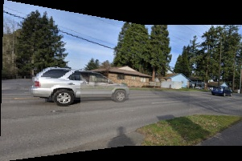Target 1, Target 2, Result
 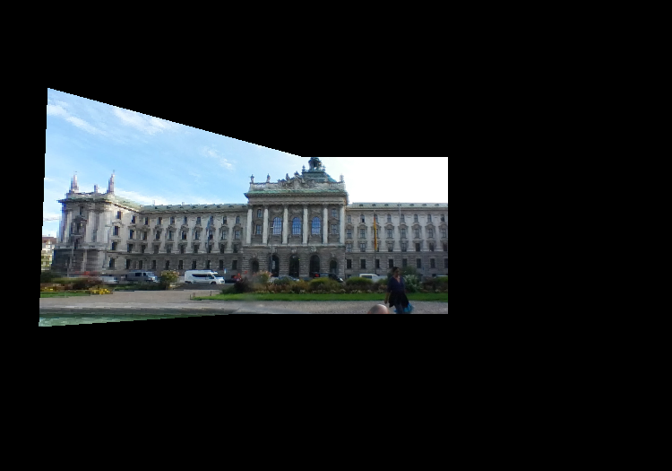
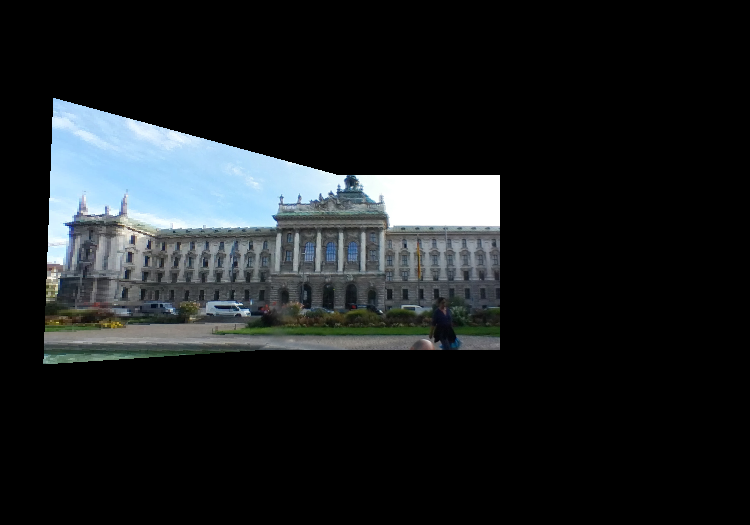
This Python Script takes two images that have been captured from the same location at different facing perspectives and merges them together into a single panoramic photo.
Target 1, Target 2, Result
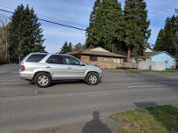 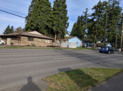 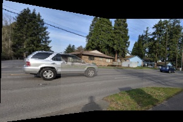Target 1, Target 2, Result
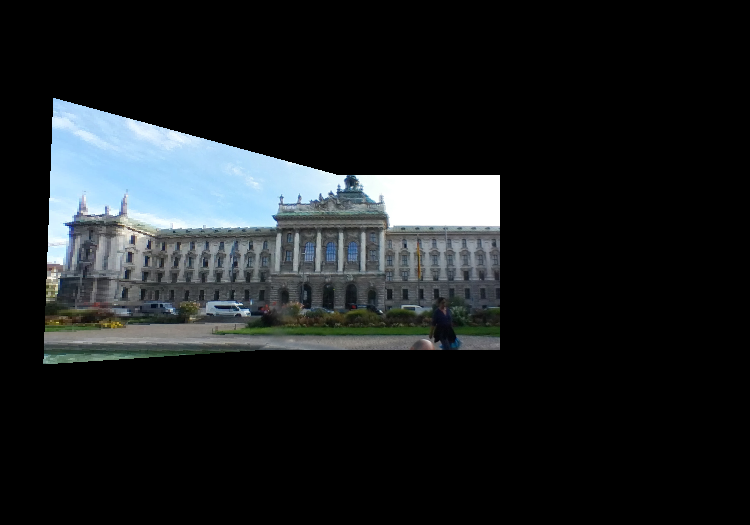
There are three major steps to accmplishing this computer vision task.
1. Initially we use the previously patented SIFT algorithm to extract local keypoint features for each image. Similar features are detected by comparing their feature vector's Euclidean distances. Keypoints in the set that indicate the same attributes for a feature are used. The validity of the keypoint descriptors is performed via a Hough transform. The Hough transform accumulates the lines of the keypoints for the two images that are closest together. Here are some example visualizations of the keypoints found by SIFT.
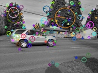 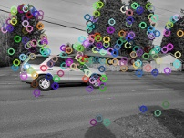 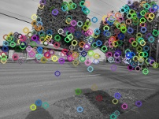2. Outliers for the matching feature spaces are determined via the Random Sample Consensus (RANSAC) algorithm to find a homography transformation matrix that aligns 2 sets of feature points transform the first set of feature point to the second (e.g. warp image 1 to image 2). The homography is acceptable if the desired inliers ratio is higher than the reprojection error (keep match with highest number of inliers).
3. Finally, the first image is warped to align with the second image using the homography matrix calculated via backward/inverse transform warping and bilinear resampling. The images are then blended together by dimming the brightness of the overlapping regions.